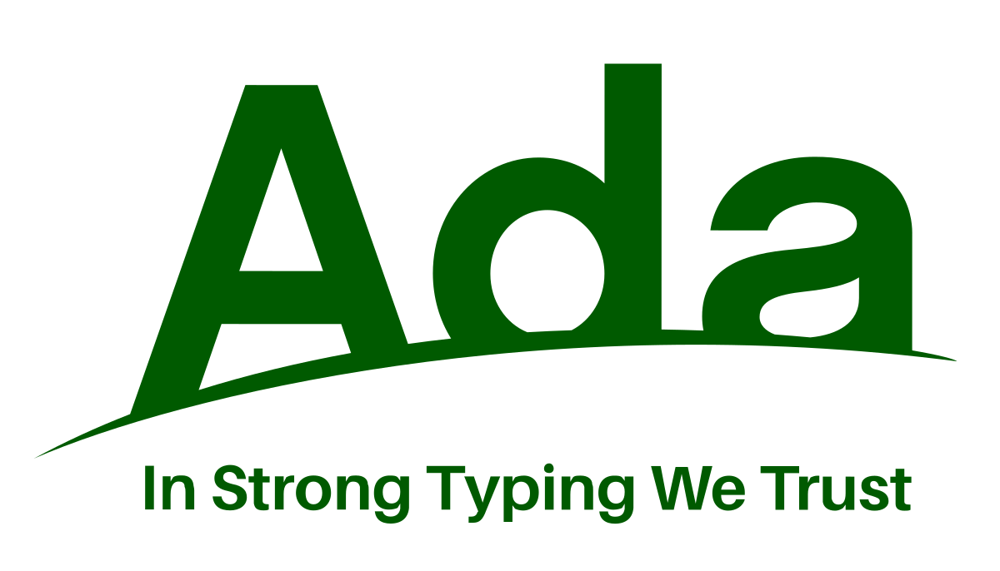

Compétences, cours et formation
Compétences
Ingénierie Réseaux & Télécommunications
En tant qu'étudiant ingénieur de deuxième année spécialisé en Réseaux et Télécommunications, j'ai acquis de solides compétences techniques dans les domaines suivants :
🌐 Routage & Couche 3
🔗 Réseaux Locaux (LAN)
📡 Télécoms & Signalisation
📦 Transport & Application
Langages de Programmation

Ada 60%Autres Langages & Outils
Cours
2ème Année - Semestre 1
Voir les cours
- Modélisation de Canal
- Égalisation de Canal
- OFDM
- Codage Canal
- Codage Source
- Internet
- Théorie des Graphes
- Réseaux Locaux
- Réseaux de Télécommunications
- Systèmes Concurrents
- Intergiciel
1ère Année - Semestre 2
Voir les cours
- Traitement du Signal
- Télécommunications
- Réseaux
- Internet
- Calcul Scientifique
- Apprentissage
- Technologie Objet
- Architecture des Ordinateurs
- Systèmes d'Exploitation
1ère Année - Semestre 1
Voir les cours
- Programmation Impérative
- Intégration
- Probabilités
- Analyse Numérique
- Optimisation
- Statistiques
- Automatique
- Analyse de Données
- Modélisation
- Architecture des Ordinateurs
Formation
2024 - 2027
Toulouse INP N7 (ENSEEIHT)Diplôme d'Ingénieur spécialisé en Sciences du Numérique - Réseaux et Télécommunications
2022 - 2024
CPGE PCSI - PCClasses Préparatoires aux Grandes Écoles dans la filière PCSI puis PC.
2020 - 2022
BaccalauréatSpécialité Mathématiques, Physique et Chimie